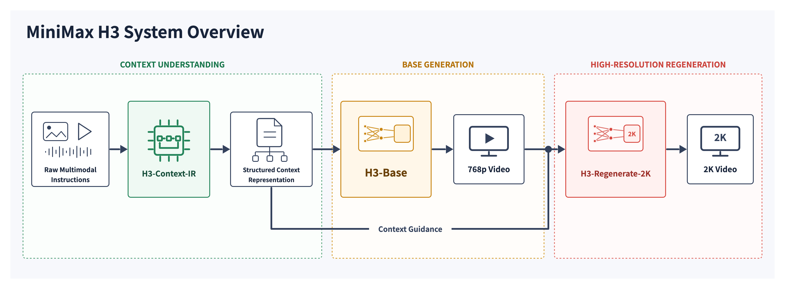

🎮 费曼一分钟（通俗速读）
把 MiniMax-H3 想象成一个「全能导演」：你随手丢给它文字、几张图、几段参考视频和几段音频，它先派一个「编剧助理」（H3-Context-IR）把这堆杂乱素材读懂、理顺时序与关系，写成一份结构化的分镜脚本（Context 中间表示）；然后「导演本体」（H3-Base，330 亿参数的单流 Transformer）照着脚本一次性把画面和立体声一起拍出来——注意是画面和声音联合生成，而不是先出画面再配音；最后如果你要更高清，它不另请「放大专家」，而是把 768p 成片连同原始素材塞回自己脑子里重画一遍成 2K（H3-Regenerate-2K）。
技术上的三个关键词：① Omni-Modal 全模态——文本/图像/视频/音频统一打包成一条序列喂进同一个 Transformer；② 联合视音频 latent——视觉走 H3-VisualVAE（空间压 16×、时间压 4×、24 通道 f16t4d24），音频走 H3-AudioVAE（32kHz→40Hz、左右声道独立），用三维 MM-RoPE $(t,h,w)$ 标好时空位置；③ in-context 再生成——2K 不是超分模块，而是让模型「重新生成」以复原小字、细节。输出可达 4–15 秒、24fps、32kHz 立体声、支持 21:9~9:16 多比例与 11 种语言配音。
1. System Overview（系统总览）
MiniMax H3 is a general-purpose, omni-modal generative system. It supports unified understanding of multimodal contexts composed of text, images, video, and audio, and can generate video with native stereo audio at resolutions up to 2K and durations of up to 15 seconds.
Thanks to its task-generalization-oriented system design, H3 already possesses broad multimodal context understanding and generation capabilities at the pre-training stage, enabling outstanding performance in following complex multimodal instructions.
MiniMax H3 是一个通用的全模态生成系统。它支持对由文本、图像、视频与音频组成的多模态上下文进行统一理解，并能生成带原生立体声音频的视频，分辨率最高 2K、时长最长 15 秒。
得益于面向任务泛化的系统设计，H3 在预训练阶段就已具备广泛的多模态上下文理解与生成能力，因而在遵循复杂多模态指令上表现出色。
一句话主张
H3 不是「文生视频」的单一任务模型，而是把 t2v / i2v / 首尾帧 / 参考生成 / 视频编辑 / 配音统一到一个全模态生成系统——「任务泛化」是它区别于 Wan/CogVideoX 等专用管线的核心卖点。
「原生立体声」的分量
native stereo audio 意味着音画在同一模型里联合生成（而非先出视频再 TTS 配音），这是 H3 在架构上把 AudioVAE 与 VisualVAE 并入同一 Transformer 序列的直接后果（见 §4）。
「预训练即具备」的含义
强调能力来自 pre-training 而非逐任务微调 → 泛化性来自统一序列建模与大规模多模态预训练，而非任务专用头。
H3 supports the following I/O: output duration 4–15 seconds; aspect ratios including 21:9, 16:9, 4:3, 1:1, 3:4, 9:16; resolution with shorter side 768px by default (2K via H3-Regenerate-2K); frame rate 24 FPS; audio 32 kHz stereo; stable dialogue support for 11 languages (Arabic, Chinese, English, French, German, Italian, Japanese, Korean, Portuguese, Russian, Spanish).
Two model variants: H3-Base-FL2VA (first-and-last-frame mode; zero/one/two input images → t2v / first- or last-frame-to-video / first-and-last-frame-to-video) and H3-Base-Ref2VA (omni-reference mode; ≤9 images, ≤3 video clips, ≤3 audio clips, each clip 2–15s, total ≤15s, ≤12 files across all types).
H3 的输入输出规格：输出时长 4–15 秒；宽高比支持 21:9、16:9、4:3、1:1、3:4、9:16 等；分辨率默认短边 768px（借助 H3-Regenerate-2K 可达 2K）；帧率 24 FPS；音频 32 kHz 立体声；稳定支持 11 种对白语言（阿拉伯语、中文、英语、法语、德语、意大利语、日语、韩语、葡萄牙语、俄语、西班牙语）。
两个模型变体：H3-Base-FL2VA（首尾帧模式；输入 0/1/2 张图 → 文生视频 / 首帧或尾帧生视频 / 首尾帧生视频）与 H3-Base-Ref2VA（全参考模式；≤9 张图、≤3 段视频、≤3 段音频，每段 2–15 秒，总计 ≤15 秒，所有类型合计 ≤12 个文件）。
两个 checkpoint 的分工
FL2VA 用「首帧/尾帧」作为强空间约束，覆盖最常见的 t2v 与图生视频；Ref2VA 走「多模态参考」路线，支持把已有主体/音色/视频作为参照做编辑与再创作——这解释了官方示例里「换脸说话 + 复用背景音乐」这类视频编辑能力。
约束的工程含义
「总时长 ≤15s、文件 ≤12」是序列长度上限的外化：参考素材越多，打包进 Transformer 的 token 越长，故用文件数与时长双重封顶来控制显存与算力。

The complete H3 system consists of three modules: H3-Context-IR deeply understands and refines the input multimodal instructions and converts them into a Context Intermediate Representation for generation (critical to output quality; strongly recommended to include). H3-Base generates audio and video from the H3-Context-IR output at 768p. H3-Regenerate-2K feeds the 768p result together with the original context back into H3 to regenerate the output at 2K, leveraging both H3's generative capabilities and the rich information in the original context.
完整 H3 系统由三个模块组成：H3-Context-IR 深度理解并精炼输入的多模态指令，将其转换为供生成使用的「上下文中间表示」（对最终输出质量至关重要，强烈建议纳入流程）。H3-Base 依据 H3-Context-IR 的输出生成音视频，分辨率 768p。H3-Regenerate-2K 把 768p 结果连同原始上下文再喂回 H3，以 2K 重新生成，同时利用 H3 的生成能力与原始上下文中的丰富信息。
三模块流水线（自绘）
flowchart LR U["多模态输入
文本/图/视频/音频"] --> IR["H3-Context-IR
理解·编排·补全
(闭源, 提供 API)"] IR --> CIR["Context 中间表示"] CIR --> B["H3-Base 33B
联合生成 视频+音频"] B --> V["768p 音视频"] V --> R["H3-Regenerate-2K
in-context 再生成
(闭源, 提供 API)"] CIR -.原始上下文.-> R R --> O["2K 音视频"]
开源边界
仅 H3-Base 开源（两个 checkpoint 权重）；Context-IR 与 Regenerate-2K 依赖多阶段工作流与托管服务，未开源，官方以 API 复现其行为。这意味着本地部署只能验证 768p；完整 2K 质量需 API 组合（见 §部署）。
2. H3-Context-IR（上下文中间表示）
H3-Context-IR is responsible for deeply understanding and refining the multimodal instructions provided by the user, and serializing them into a Context Intermediate Representation that H3-Base consumes for generation.
This module is critical to the final output quality and is strongly recommended in the pipeline. It is not open-sourced; instead, an API and prompting guidance are provided to reproduce its behavior.
H3-Context-IR 负责深度理解并精炼用户提供的多模态指令，并将其序列化为一个「上下文中间表示」，供 H3-Base 消费用于生成。
该模块对最终输出质量至关重要，强烈建议纳入流程。它未开源；官方转而提供 API 与 prompting 指导来复现其行为。
为什么要「IR」这一层？
类比编译器：用户的自然语言 + 杂乱素材是「源代码」，直接喂给生成模型效果不稳。Context-IR 相当于前端 + 优化器，把意图解析、素材编排、缺失信息补全后，产出结构化「字节码」（Context 中间表示），让 H3-Base 这个「后端」专心做生成。
为何闭源却给 API
Context-IR 往往是多阶段编排 + 规则/模型混合的工程系统，难以打包成单一权重；官方以 API + prompting guidance 让社区在本地 H3-Base 前接入等效前处理。
省略它的代价
可以跳过（直接给 H3-Base 原始 prompt），但官方明确「critical to quality」——省略后指令遵循与画质会明显下降。
3. H3-Base 架构（联合视音频生成）

In H3-Base, each modality is encoded by its corresponding encoder or VAE into latents, which are then packed into a single multimodal sequence. Positional information is injected via RoPE, and the H3-Omni-Transformer jointly predicts the video and audio latents. The predicted latents are decoded back into video and audio by the respective decoders.
The video latents are produced by H3-VisualVAE, audio latents by H3-AudioVAE, and text/reference conditions by H3-Encoder (a vision-language model). All are concatenated as one sequence so that attention operates across modalities uniformly.
在 H3-Base 中，每个模态先经其对应的 encoder 或 VAE 编码为 latent，随后被打包成一条统一的多模态序列。位置信息通过 RoPE 注入，H3-Omni-Transformer 联合预测视频与音频 latent。预测出的 latent 再由各自的 decoder 解码回视频与音频。
视频 latent 由 H3-VisualVAE 产生，音频 latent 由 H3-AudioVAE 产生，文本/参考条件由 H3-Encoder（一个视觉-语言模型）产生。三者拼接为一条序列，使注意力得以在模态间统一运算。
「packed 单序列」是关键设计
不同于「双流」（视觉分支 + 文本分支各走各的再交叉），H3 把所有模态 latent 拼成一条序列喂给同一个 Transformer——这是 attention 能跨模态自由交互的前提，也是「原生音画同步」的架构根源。
三种编码器的分工
H3-Encoder（VLM）负责条件（文本 prompt、参考图语义）；VisualVAE / AudioVAE 负责生成目标（要被去噪/预测的视频、音频 latent）。前者是「读」，后两者是「写」。
与 CogVideoX 等的对比
CogVideoX 是「文本 + 视频」双模态、纯视频输出；H3 把音频也拉进同一序列联合预测，故需三维 MM-RoPE 同时给视觉的 $(t,h,w)$ 与音频的时间轴编码位置（见 §5）。
4. H3-VisualVAE & H3-AudioVAE（双 VAE）
H3-VisualVAE is a temporally-causal VAE with configuration f16t4d24: it downsamples space by 16×, time by 4×, with a 24-channel latent. After a patchify of size 1×2×2 over $(t,h,w)$, the effective spatial downsampling reaches 32× and temporal 4×. A ViT-based decoder is adopted to reduce decoding cost.
H3-VisualVAE 是一个时序因果 VAE，配置为 f16t4d24：空间下采样 16×、时间下采样 4×、latent 通道数 24。在 $(t,h,w)$ 上做 1×2×2 的 patchify 之后，有效空间下采样达 32×、时间 4×。解码端采用 ViT 结构以降低解码成本。
f16t4d24 逐位拆解
f16=空间压缩 16×（H、W 各除 16）；t4=时间压缩 4×（每 4 帧压成 1 个 latent 帧）；d24=latent 通道 24。
patchify 再压一半
Transformer 入口再做 1×2×2 patch（时间不压、空间再 2×），故进入 attention 的有效空间下采样 = 16×2 = 32×。这一步把序列长度再降 4 倍，是控制 33B 模型显存的关键。
「时序因果」的意义
causal 指编码 t 帧时只看 ≤t 的帧，保证可流式/分块编码长视频，避免未来帧泄漏。ViT decoder 则用于摊薄高分辨率解码开销。
H3-AudioVAE encodes 32 kHz stereo audio. The left and right channels share the same encoder and decoder but are processed independently and then recombined to preserve stereo. It compresses 32 kHz waveforms into a 40 Hz latent. Inspired by VA-VAE, its latent space is optimized to align better with the generative transformer.
H3-AudioVAE 编码 32 kHz 立体声音频。左右声道共享同一 encoder 与 decoder，但各自独立处理后再重组以保留立体声。它把 32 kHz 波形压缩为 40 Hz 的 latent。受 VA-VAE 启发，其 latent 空间经过优化以更好地对齐生成式 transformer。
800× 时间压缩
「共享权重、独立处理」的巧思
左右声道用同一套参数（省参数、保证音色一致性），但分别 forward（保留左右差异 → 立体声定位）。既非「合并成单声道」也非「两套独立网络」，是折中方案。
VA-VAE 的作用
借鉴 VA-VAE 让 latent 分布更适合被 Transformer 生成（而非只追求重建 PSNR），降低音频与视觉在同一序列里的建模难度失配。
5. H3-Omni-Transformer（联合骨干）
The H3-Omni-Transformer is a 33B dense, single-stream Transformer. Around 13B parameters reside in the AdaLN branch; because the modulation outputs of AdaLN can be precomputed and cached, they need not be loaded for inference-only deployment.
Its attention and FFN blocks have no modality-specific structure; modality-specific parameters are confined to the I/O layers and the AdaLN branch. Positions are encoded by a 3-D MM-RoPE over $(t,h,w)$. Native sparse attention is introduced late in training; the first open-source release ships with full attention only.
H3-Omni-Transformer 是一个 33B 的密集、单流 Transformer。约 13B 参数位于 AdaLN 分支；由于 AdaLN 的 modulation 输出可预计算并缓存，纯推理部署时无需加载它们。
其 attention 与 FFN 模块没有模态专属结构；模态专属参数仅限于 I/O 层与 AdaLN 分支。位置由三维 MM-RoPE 在 $(t,h,w)$ 上编码。训练末期引入原生稀疏注意力；首个开源版本仅提供 full attention。
33B 里 13B 是「可省」的
AdaLN（自适应 LayerNorm）分支产出的是随时间步/条件变化的 scale & shift。关键洞察：这些 modulation 输出只依赖条件与时间步、与序列内容无关，因此可预计算并缓存。推理时直接查表 → 无需加载这 13B → 实际部署显存约按 20B 算。
「单流 + 无模态专属结构」
attention/FFN 对所有模态一视同仁，模态差异只体现在入口 embedding、出口 head、AdaLN。好处：主干可规模化、跨模态知识共享；代价：模态平衡靠数据与 AdaLN 调节。
MM-RoPE 三维分解
把旋转位置编码沿 $t,h,w$ 三轴分频拼接，使视频 token 的时空坐标、音频 token 的时间坐标都能在同一序列里被一致寻址——这是「音画对齐」在位置编码层的保障。
sparse attention 的取舍
训练末期才加 native sparse attention（省长序列算力），但首版开源只给 full attention → 复现更简单、结果更稳，代价是长视频推理更贵。
6. H3-Regenerate-2K（in-context 再生成）
H3-Regenerate-2K is not a dedicated super-resolution module. Instead, it feeds the 768p output together with the original context back into H3 and regenerates the result in an in-context manner at 2K, leveraging both H3's generative prior and the rich information contained in the original context.
H3-Regenerate-2K 并非专用的超分辨率模块。相反，它把 768p 输出连同原始上下文一起再喂回 H3，以 in-context 方式在 2K 分辨率重新生成结果，同时利用 H3 的生成先验与原始上下文所包含的丰富信息。
「再生成」vs「超分」
传统超分（如 ESRGAN）只从低清像素推高清，无法凭空「造」出正确的小字、纹理。H3-Regenerate-2K 把 768p 结果 + 原始 prompt/参考一起当条件，让模型「重画」一遍——所以它能修复小字、补全细节，而非单纯插值放大。
复用 base model 的价值
无需训练专用超分网络：直接复用 H3-Base 的生成能力（in-context），省参数、保风格一致。代价是需要跑两遍生成 → 2K 更慢更贵。
闭源现状
该模块未开源，官方以 API 提供。本地 SGLang 只能出 768p，2K 需接官方 Regenerate-2K API（见 §部署）。
7. Code — 部署与关键模块对照
下列伪代码对照官方仓库 MiniMax-AI/MiniMax-H3，帮助把论文概念落到可运行的调用。
7.1 diffusers 一键推理（H3-Base 768p）
最简路径：用 ModularPipeline 从 HF 仓库加载自包含权重，传入文本/图像/音频参考即可生成音视频。
from diffusers import ModularPipeline
# 仓库自带 model_index.json + processor/tokenizer/text_encoder
# + transformer(33B) + visual_vae(f16t4d24) + audio_vae
pipe = ModularPipeline.from_pretrained("MiniMaxAI/MiniMax-H3")
# FL2VA: 0/1/2 张图 -> t2v / 首帧或尾帧 / 首尾帧
out = pipe(
prompt="a cat DJ scratching vinyl, upbeat music",
num_frames=10 * 24, # 10s @ 24fps
aspect_ratio="16:9",
height=768, # 短边默认 768，2K 需 Regenerate-2K
)
save_video_with_audio(out.video, out.audio, fps=24, sr=32000)要点：视频与音频同一次前向联合输出（out.video + out.audio），对应 §3「packed 单序列联合预测」。
7.2 SGLang 多卡部署（推理服务）
生产推理用 SGLang，Ulysses 序列并行切长序列；--model-variant 选择 fl2va / ref2va。
# 4 卡，Ulysses 并行度 4，加载 FL2VA 变体
python -m sglang.launch_h3 \
--model-path MiniMaxAI/MiniMax-H3 \
--model-variant fl2va \
--num-gpus 4 \
--ulysses-degree 4
# Ref2VA（全参考模式）：--model-variant ref2va
# 输入约束：<=9 图 / <=3 视频 / <=3 音频，各段 2-15s，总 <=15s，<=12 文件推理-only 部署无需加载 ~13B AdaLN 分支（modulation 可缓存），对应 §5 显存优化。
7.3 H3-VisualVAE 形状对照（f16t4d24 + patch）
把 §4 的压缩率写成张量形状，验证进入 Transformer 的序列长度。
# 原始视频: (T, H, W, 3) 例如 (240, 768, 1360, 3) = 10s@24fps, 16:9
# VAE 编码: 空间/16, 时间/4, 通道=24
lat = visual_vae.encode(video) # (T/4, H/16, W/16, 24) = (60, 48, 85, 24)
# Transformer 入口 patchify 1x2x2 (t,h,w): 空间再/2
tokens = patchify(lat, patch=(1, 2, 2)) # (60, 24, 42, C) -> 有效空间下采样 32x
seq = tokens.flatten(0, 2) # 展平为一维视觉 token 序列有效空间下采样 = VAE 16× × patch 2× = 32×；序列长度直接决定 attention 算力与显存。
7.4 3-D MM-RoPE（位置编码）
§5 的三维位置编码：沿 t/h/w 三轴分频，拼接成每个 token 的旋转编码。
def mm_rope(t, h, w, dim):
# dim 按三轴切分，各自做标准 RoPE 后拼接
d_t, d_h, d_w = split_dim(dim) # 例如 dim//2, dim//4, dim//4
rope_t = rope_1d(t, d_t) # 时间轴（视频帧 / 音频时刻）
rope_h = rope_1d(h, d_h) # 高度轴
rope_w = rope_1d(w, d_w) # 宽度轴
return concat([rope_t, rope_h, rope_w], dim=-1)
# 音频 token: 仅 t 轴有效，h=w=0 -> 与视频在同一时间轴上对齐（音画同步）关键：视频用 $(t,h,w)$、音频只用 $t$，二者共享同一时间轴 → 位置编码层面保证音画同步。
7.5 完整 2K 工作流（Base 本地 + IR/2K 走 API）
开源边界的落地：本地只出 768p，Context-IR 与 Regenerate-2K 调官方 API。
# 1) 前处理：多模态指令 -> Context 中间表示（官方 API，闭源）
context_ir = h3_context_ir_api(user_prompt, images, videos, audios)
# 2) 本地生成 768p（开源 H3-Base，SGLang/diffusers）
video_768p, audio = local_h3_base.generate(context_ir)
# 3) 再生成 2K：768p + 原始上下文 一起回喂（官方 API，闭源）
video_2k = h3_regenerate_2k_api(video_768p, audio, context_ir)对应 §1 三模块流水线：中间 H3-Base 可离线复现，两端 IR/2K 依赖托管服务。
8. Deployment（部署框架与可复现用例）
H3-Base 权重为 BF16、CFG-distilled，支持四类框架部署；官方给出三个可直接复现的生成用例。
| 框架 | 用途 | 关键参数 / 入口 |
|---|---|---|
| SGLang | 生产多卡推理（cookbook） | --num-gpus 4 --ulysses-degree 4 --model-variant fl2va/ref2va |
| vLLM | 高吞吐推理 | 加载 HF 式自包含仓库 |
| diffusers | 快速上手 / 单卡 | ModularPipeline.from_pretrained("MiniMaxAI/MiniMax-H3") |
| ComfyUI | 可视化工作流 | R2V / T2V template |
| 可复现用例 | 配置 | 说明 |
|---|---|---|
| T2VA | 10s, 16:9 | 纯文本 → 音视频（FL2VA 零图输入） |
| I2VA | 8s, 首帧 | 单图作首帧 → 音视频（FL2VA 一图输入） |
| Ref2VA | 5s, 视频+音频参考 | omni-reference：复用参考视频与音色（Ref2VA） |
| Full 2K Workflow | Base 本地 + API | 本地 SGLang 出 768p + 官方 Context-IR / Regenerate-2K API |
9. Notation（符号与术语表）
| 符号 / 术语 | 含义 |
|---|---|
f16t4d24 | VisualVAE 配置：空间下采样 16×、时间 4×、latent 通道 24 |
| patchify 1×2×2 | Transformer 入口在 $(t,h,w)$ 上分块：时间不压、空间再 2× → 有效空间 32× |
| MM-RoPE $(t,h,w)$ | 三维多模态旋转位置编码，沿时/高/宽三轴分频拼接 |
| AdaLN | 自适应 LayerNorm；H3 中约 13B 参数，modulation 输出可预计算缓存 |
| CFG-distilled | 无分类器引导蒸馏：把 CFG 采样蒸进单次前向，推理免跑两遍 |
| FL2VA | First-and-Last-frame to Video+Audio，0/1/2 图输入 |
| Ref2VA | omni-Reference to Video+Audio，多模态参考（≤9图/≤3视频/≤3音频） |
| H3-Context-IR | 上下文中间表示模块（闭源，API） |
| H3-Regenerate-2K | in-context 再生成到 2K（闭源，API，非超分） |
| Omni-Transformer | 33B 密集单流骨干，联合预测视频+音频 latent |
| native stereo | 音视频在同一模型联合生成的原生立体声 |
| Ulysses degree | SGLang 序列并行度，切分长多模态序列到多卡 |
10. 全景总览（一张表看懂 H3）
| 维度 | 内容 |
|---|---|
| 系统定位 | 通用全模态视频生成系统（t2v/i2v/首尾帧/参考/编辑/配音统一） |
| 三模块 | Context-IR（理解编排，闭源）→ H3-Base（768p 生成，开源）→ Regenerate-2K（2K 再生成，闭源） |
| 骨干 | H3-Omni-Transformer 33B 密集单流，~13B AdaLN 可缓存，3-D MM-RoPE |
| 视觉压缩 | H3-VisualVAE f16t4d24 + patch 1×2×2 → 有效空间 32×、时间 4× |
| 音频压缩 | H3-AudioVAE 32kHz→40Hz，左右声道共享权重独立处理（立体声） |
| 输出 | 4–15s、24fps、32kHz 立体声、21:9~9:16 多比例、11 语言、短边 768（2K 需 Regenerate） |
| 权重 | FL2VA / Ref2VA 两个 checkpoint，BF16、CFG-distilled，HF 式自包含仓库 |
| 部署 | SGLang / vLLM / diffusers / ComfyUI |
| 核心创新 | 全模态 packed 单序列 + 音画联合 latent 预测 + in-context 再生成 2K |
11. 十问十答（FAQ）
Q1. H3 和 MiniMax 的语言模型（M1/M2）是一回事吗？
不是。H3 是全模态视频生成系统（Hailuo 视频），与 MiniMax 的文本大语言模型是不同产品线。二者都出自 MiniMax，但架构与目标完全不同——请勿混淆。
Q2. 为什么说 H3 是「全模态」而不是「多模态」？
它把文本、图像、视频、音频都统一进同一条序列，且输出也是音+视频（原生立体声）。多数「多模态」模型只在输入端多模态、输出仍是单一模态；H3 在输入输出两端都覆盖多模态，故称 omni-modal。
Q3. 2K 是超分放大出来的吗？
不是。H3-Regenerate-2K 把 768p 结果 + 原始上下文回喂模型重新生成，能修复小字与细节，而非像素插值。它复用 H3-Base 的生成能力（in-context），不是独立超分网络。
Q4. 33B 模型部署真要 33B 显存吗？
推理时不必。约 13B 在 AdaLN 分支，其 modulation 输出可预计算并缓存，纯推理部署无需加载 → 实际按约 20B 规模部署。
Q5. FL2VA 和 Ref2VA 该选哪个？
要「文生视频 / 首帧或尾帧约束」选 FL2VA（0/1/2 图）；要「用已有主体、音色、视频片段做参考/编辑」选 Ref2VA（≤9图/≤3视频/≤3音频，总≤15s、≤12文件）。
Q6. 音画同步靠什么保证？
三点：① 视频与音频在同一序列被联合预测；② 三维 MM-RoPE 让音频 token 与视频 token 共享同一时间轴；③ AudioVAE 与 VisualVAE 时间压缩率对齐（VisualVAE t4、AudioVAE 32kHz→40Hz）。
Q7. 完全本地就能出 2K 吗？
不能。开源的只有 H3-Base（768p）。Context-IR 与 Regenerate-2K 未开源，需调官方 API。本地 SGLang/diffusers 只能验证 768p 质量。
Q8. 为什么骨干里没有「模态专属」的 attention/FFN？
单流设计让主干对所有模态一视同仁，便于规模化与跨模态知识共享。模态差异只放在入口 embedding、出口 head、AdaLN 这些轻量位置，主干保持统一。
Q9. CFG-distilled 有什么好处？
传统无分类器引导（CFG）每步要跑「有条件 + 无条件」两次前向。蒸馏后把引导效果压进单次前向，推理速度接近翻倍，且权重已是蒸馏版，开箱即用。
Q10. 首版开源为什么只给 full attention？
native sparse attention 在训练末期才引入。首版只放 full attention 是为了复现简单、结果稳定；代价是长视频/长序列推理算力更高，后续版本可能补上稀疏实现。
12. 深挖思考（Deep Dive）
为什么把音频塞进同一个 Transformer，而不是先出视频再配音？
「先视频后配音」的两阶段方案有个根本缺陷：音画时序难对齐——口型、脚步声、乐器击打点都要精确匹配画面，后配音只能靠对齐算法硬凑，且无法让画面反过来「迁就」声音。H3 把音频 latent 与视频 latent 放进同一序列联合预测，二者在 attention 里互为条件：说话时嘴型跟着音素动、鼓点落在动作帧上，都是同一次生成里自然涌现的。代价是序列更长、显存更贵，这也是为什么要 f16t4d24 + patch 把序列压到 32× 空间下采样。
AdaLN 缓存省 13B，这个设计的普适性有多大？
关键前提是 modulation 只依赖时间步与条件、不依赖序列内容。在 diffusion Transformer（DiT 系）里这普遍成立——AdaLN 输出的 scale/shift 由 timestep embedding + 条件 embedding 决定。所以「预计算缓存 AdaLN」是 DiT 类模型通用的推理优化，H3 只是把它规模化到 13B 量级并明确写进部署路径。但注意：一旦引入「随内容变化的调制」（如某些 cross-attention 变体），缓存假设就失效了。
in-context 再生成 2K，比训练一个专用超分模块好在哪、又差在哪？
好处：① 零额外训练、复用 base 权重；② 风格/语义一致（同一模型的先验）；③ 能「造」细节而非插值——因为它拿着原始 prompt 重画。代价：① 要跑第二遍完整生成，2K 更慢更贵；② 再生成可能引入与 768p 不一致的漂移（需靠回喂 768p 结果约束）。这是典型的「用推理成本换训练成本与一致性」的权衡，适合追求质量上限、能接受更长延迟的场景。
单流「无模态专属结构」会不会导致某个模态被主导？
存在风险：视频 token 数量远多于音频 token，若不加平衡，梯度与注意力可能被视觉主导，音频质量退化。H3 把模态差异收敛到 I/O 层 + AdaLN，意味着模态平衡主要靠数据配比与 AdaLN 调制而非结构隔离。这是一个「赌主干规模够大 + 数据够均衡就能自平衡」的设计哲学，与「双流强制隔离」路线相反——H3 选择了前者以换取可规模化与知识共享。
CFG Distillation：为什么能把「跑两遍」压成「跑一遍」，代价是什么？
先看 CFG 是什么。无分类器引导（Classifier-Free Guidance）在采样每一步都要算两个预测：一个带条件 $\epsilon_\theta(x_t,c)$、一个不带条件 $\epsilon_\theta(x_t,\varnothing)$，再按引导系数 $w$ 外推：
这样能显著提升「贴合 prompt」的程度，但代价是每步两次前向——对 33B、长音视频序列的 H3 而言，等于把推理算力直接翻倍。
蒸馏做了什么
CFG Distillation 训练一个学生模型，让它单次前向就直接输出「已经带上引导效果」的结果，去逼近教师（原模型跑完整 CFG 两遍外推）的输出。引导系数 $w$ 可以作为一个额外条件喂给学生，于是：
训练目标就是最小化两者差异（蒸馏损失）。收敛后，推理时只需跑一遍学生前向，无条件分支被彻底省掉。
好处
① 每步前向数从 2 → 1，长序列音视频生成推理近乎提速一倍；② H3-Base 权重已是蒸馏版，开箱即用、无需再自己调 CFG；③ 显存与调度更简单（不必同时保有条件/无条件两路激活）。
代价与取舍
① 引导强度相对固化：蒸馏时通常锁定或有限采样 $w$ 范围，推理时不像原 CFG 那样能任意大幅调 $w$；② 存在蒸馏损失：学生逼近教师会有微小质量/多样性折损，极端引导下更明显；③ 需要一次额外蒸馏训练成本。对 H3 这种「大模型 + 长序列 + 要落地部署」的场景，这笔账明显划算——用一次性训练换来每次推理永久减半的开销。